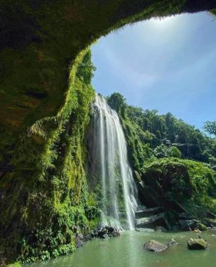

Hulugan Falls
Hulugan Falls
Hulugan Falls is one of the tallest falls in Laguna province which is located in the municipality of Luisiana. According to its history, Hulugan Falls has been a gem among locals until it became popular on social media accounts such as Facebook, Youtube, and Instagram in the past decade. It has a height of 235 feet or 71 meters high. It was said that the falls were named Hulugan due to the weird time when a carabao fall down to the falls because of the strong water currentsHulugan Falls is one of the most visited places in the province of Laguna. It attracts thousands of tourists every year due to its majestic cascading water and irresistible charm. It is just three hours away from Metro Manila and because of that, it can be visited within a day. In addition, tourist and visitors have a chance to chase not only one falls but three waterfalls. The other two nearby falls are namely Talay Falls and Hidden Falls. So if you want to enjoy the beauty of nature and release stress through sightseeing, hiking and swimming then add Hulugan Falls to your day tour travel bucket list.
How to go to hulugan Falls
By commuting from Manila
- From the Buendia bus terminal in Pasay City, ride an air-conditioned bus of JAC Liner bound for Santa Cruz, Laguna, and tell the bus conductor to alight you at Santa Cruz town proper. The estimated travel time is three hours and the bus fare is 215+ pesos.
- From the Santa Cruz jeepney terminal, ride a jeep bound for Lucena City and tell the driver to drop you off at Barangay San Salvador. The jeepney fare is around 35 pesos and the travel time is twenty to thirty minutes.
- Then ride a tricycle for five minutes or walk your way toward the registration area of Hulugan Falls. Note: the tricycle fare is 80 pesos for a group of five people.
By commuting from Batangas
- From Batangas province, ride a jeep going to SM City Calamba and drop off at Walter Mart Makiling Calamba.
- Then ride a jeep to Santa Cruz, Laguna, and alight at Santa Cruz town proper. The estimated travel time is around one hour.
- From Santa Cruz, ride a jeep going to Lucban and alight at Barangay San Salvador. Then ride a tricycle going to the registration site of Hulugan Falls. The tricycle fare is twenty pesos.